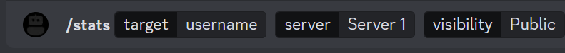
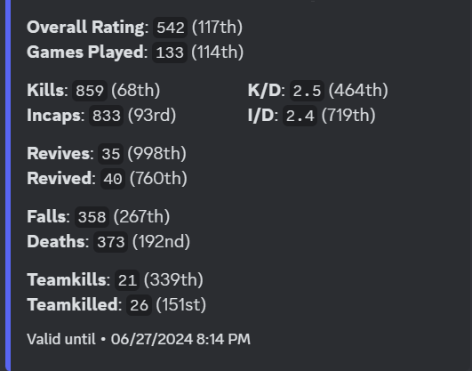

╚══██╔══╝██║░░██║██╔════╝ ██╔══██╗██╔════╝██╔══██╗██║░░░░░
░░░██║░░░███████║█████╗░░ ██████╔╝█████╗░░███████║██║░░░░░
░░░██║░░░██╔══██║██╔══╝░░ ██╔══██╗██╔══╝░░██╔══██║██║░░░░░
░░░██║░░░██║░░██║███████╗ ██║░░██║███████╗██║░░██║███████╗
░░░╚═╝░░░╚═╝░░╚═╝╚══════╝ ╚═╝░░╚═╝╚══════╝╚═╝░░╚═╝╚══════╝
██╗███╗░░██╗██╗░░░██╗░█████╗░░██████╗██╗░█████╗░███╗░░██╗
██║████╗░██║██║░░░██║██╔══██╗██╔════╝██║██╔══██╗████╗░██║
██║██╔██╗██║╚██╗░██╔╝███████║╚█████╗░██║██║░░██║██╔██╗██║
██║██║╚████║░╚████╔╝░██╔══██║░╚═══██╗██║██║░░██║██║╚████║
██║██║░╚███║░░╚██╔╝░░██║░░██║██████╔╝██║╚█████╔╝██║░╚███║
╚═╝╚═╝░░╚══╝░░░╚═╝░░░╚═╝░░╚═╝╚═════╝░╚═╝░╚════╝░╚═╝░░╚══╝

Squad Server Rules :: 1. SL's Should Have SL Kit & Communicate With Their Squad & The Squad Should Be Communicating With Each Other. 2. SL's Should Have Understanding Of The Game/Mechanics Before Squad Leading. 3. All Members Are Required To Have A Working Microphone. 4.All Locked 1 Man Logistics Squads Are Not Allowed (Exception Helicopters). 5. All Vehicle Claims Are Not Allowed Based On Squad Name (First Come First Serve). 6. Members Are Required To Play The Objectives. 7. Do Not Destroy Friendly Radios/Habs/Deployables/Emplacements/Armor (Includes Placing IEDS Near Defences/Radio) 8. Trolling Will Result In Bans. 9. Do Not Leak Intel In All Chat Will Result In Bans. 10. Do Not Camp Within 400m Of Enemy Main Base. 11. Members Should Respect The Rules & Members Of The Community Server. 12. Racism Will Result In Perm Bans. 13. All Vehicles Can Be One Manned Apart From Main Battle Tanks (MBT) 14. Siphoning Supplies Is Not Allowed Unless Confirmed With The Squad That Created The FOB Over Command Chat. 15. Do Not Create A Squad Unless You Have The Intention Of Leading It With A Squadleader Kit Will Result In Perm Bans. (Passing SL & Leaving Squad Applies)
Squad Stats ::
To View Stats Navigate To Squad-Stats Channel On Discord & Use The Command /Stats Username Server Public/Private
Your Stats Will Be Displayed In The Channel.


Download Mod Join Discord